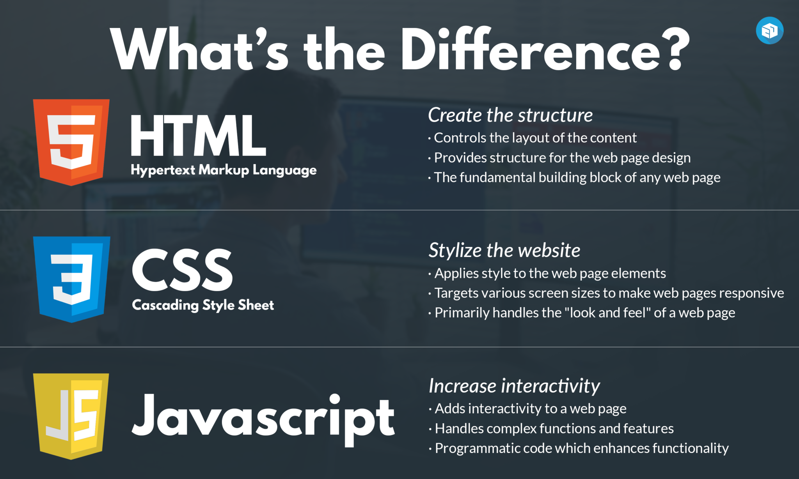

There are 3 technologies that you need to know: HTML, CSS, and JavaScript. HTML is the "blue print" for any website. It stands for HyperText Markup Language. HTML contains elements that make up the text on website that you use. CSS stands for Cascading Style Sheets. This technology changes how the website looks. Like changing the colour of a text or the size of an image. JavaScript is a programming language for the web. It's used for both client side and server side and it helps to make websites interactive. For example, when you view this website on a mobile device and use the hamburger menu button, that was programmed using JavaScript and it's an interactive way to view additional pages using the mobile responsive navigation menu.
